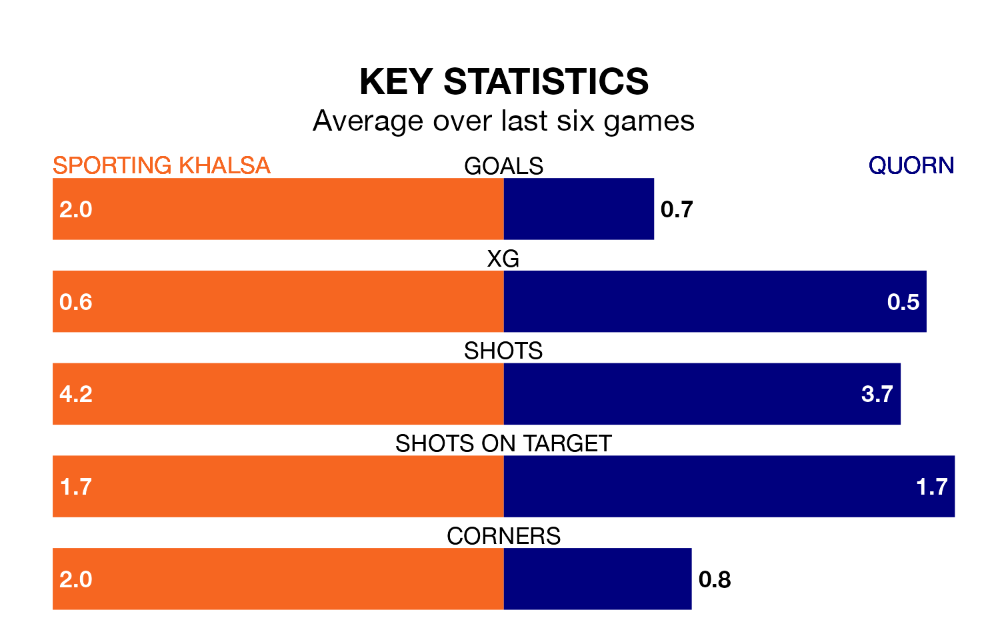

Sporting Khalsa host Quorn on Saturday in Northern Premier League Division One Midlands.
In their last league match, on Tuesday, Sporting beat Loughborough Dynamo 2-0 away.
Quorn drew, 1-1 at home against Anstey Nomads.
With 42 goals in 24 games so far this season, Quorn are scoring more than average in the league with 1.8 goals per game. And they are conceding fewer than average, letting in 33 goals at a rate of 1.4 per game.
Sporting, meanwhile, are average scorers, with 1.5 goals per game. They have conceded 1.4 goals per game.
The home team are in reasonable form in Northern Premier League Division One Midlands, with three wins and two draws from their last six games.
With a win and three draws over that period, the visitors' form is worse – they have taken six points from 18, compared to Sporting's 11.
Sporting are seventh in the table after 25 games, of which they have won 12 and drawn four, earning 40 points.
Quorn are one place behind the hosts in eighth, with 10 wins and seven draws putting them on 37 points.
Updated: 09:07 (UTC), 24/01/24